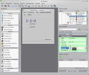

Qt
Ausbaufähige Anleitung
Dieser Anleitung fehlen noch einige Informationen. Wenn Du etwas verbessern kannst, dann editiere den Beitrag, um die Qualität des Wikis noch weiter zu verbessern.
Anmerkung: Die praktischen Beispiele am Ende des Artikel beziehen sich auf Qt 4. Wer Informationen zu Qt 5 beisteuern kann, meldet sich bitte in der Diskussion zu diesem Artikel.
Dieser Artikel wurde für die folgenden Ubuntu-Versionen getestet:
Dieser Artikel ist größtenteils für alle Ubuntu-Versionen gültig.
Zum Verständnis dieses Artikels sind folgende Seiten hilfreich:
Qt  ist eine sehr umfangreiche C++ Klassenbibliothek für die Entwicklung von Anwendungen. Den größten Bekanntheitsgrad hat Qt als Bibliothek zur Erstellung von grafischen Benutzeroberflächen, jedoch bringt Qt eine Vielzahl weiterer Module mit sich, die die Programmierung vereinfachen (bspw. Netzwerkprogrammierung, Datenbankanbindung, XML, OpenGL, etc.). Außerdem ist man beim Einsatz von Qt nicht auf C++ beschränkt. Es existieren Anbindungen zu zahlreichen Programmiersprachen. So ermöglicht zum Beispiel Qt Jambi die Programmierung in Java unter Verwendung von Qt.
ist eine sehr umfangreiche C++ Klassenbibliothek für die Entwicklung von Anwendungen. Den größten Bekanntheitsgrad hat Qt als Bibliothek zur Erstellung von grafischen Benutzeroberflächen, jedoch bringt Qt eine Vielzahl weiterer Module mit sich, die die Programmierung vereinfachen (bspw. Netzwerkprogrammierung, Datenbankanbindung, XML, OpenGL, etc.). Außerdem ist man beim Einsatz von Qt nicht auf C++ beschränkt. Es existieren Anbindungen zu zahlreichen Programmiersprachen. So ermöglicht zum Beispiel Qt Jambi die Programmierung in Java unter Verwendung von Qt.
Mit Hilfe von Qt ist die Erstellung plattformübergreifender Anwendungen möglich. Neben den Unix-Derivaten mit X11 als Darstellungsserver werden u.a. Windows, Mac OS X und Symbian unterstützt. Dabei ist hervorzuheben, dass Qt für jede Plattform das gewohnte native Look & Feel mitbringt.
Qt wurde ursprünglich von Qt Development Frameworks (bis Mitte 2008 noch Trolltech SA), einer Tochterfirma von Nokia, entwickelt und unter einem dualen Lizenzsystem freigegeben. Der Quellcode steht unter verschiedenen Open Source Lizenzen, wie z.B. der General Public License (GPL) und kann somit frei benutzt werden. Seit Qt 4.5, das in Ubuntu 9.04 erstmals zum Einsatz kam, wird neben der kommerziellen Lizenz und der GPL zusätzlich auch eine LGPL-Variante angeboten. Seit Ende Oktober 2011 ist das Qt Project die neue Heimat.
Die Benutzeroberfläche KDE verwendet seit jeher Qt (siehe Geschichte von KDE). Die aktuelle Version KDE 4 verwendet Qt 4 und konnte daher (nach einer Lizenzänderung durch Trolltech) auch auf Windows und Mac OS X portiert werden. An dieser Stelle soll auch ein weit verbreiteter Irrtum ausgeräumt werden: Wenn ein Programm Qt zur Gestaltung der grafischen Oberfläche verwendet, hat das rein gar nichts mit KDE zu tun. Es existieren allerdings Qt-Programme, die zusätzlich noch KDE-Bibliotheken verwenden und dann tatsächlich KDE voraussetzen. Dies ist teilweise auch eine Sache der Paketierung durch die jeweiligen Distributionen, da manche Programme wie z.B. Marble KDE-Abhängigkeiten nicht zwingend voraussetzen. Programme ohne Abhängigkeit von KDE-Bibliotheken bzw. mit einer optionalen Qt-Oberfläche sind über die Kategorie/Qt aufzufinden.
Installation¶
Qt verfügt über eine Vielzahl von Anbindungen an verschiedene Programmiersprachen. Für eine Übersicht sei an dieser Stelle auf Sprachanbindungen Qt 4 und Sprachanbindungen Qt 5 verwiesen.
Das folgende Paket muss installiert [1] werden, um C/C++-Anwendungen mit Qt zu entwickeln.
Qt 5¶
qt5-default (verfügbar ab Ubuntu 13.04)
 mit apturl
mit apturl
Paketliste zum Kopieren:
sudo apt-get install qt5-default
sudo aptitude install qt5-default
Benutzung¶
Editor¶
Anwendungen können in einem beliebigen Editor [2] geschrieben werden, jedoch empfiehlt sich der Einsatz einer Entwicklungsumgebung. Für die Entwicklung von C++-Anwendungen gibt es speziell auf Qt ausgerichtete Programme:
Qt Creator - Das "Allround-Talent" für die Qt-Programmierung (Editor, bindet Qt Designer ein, Projekt- und Versionsverwaltung, Hilfesystem, etc.).
QDevelop - Schlanke Qt-Entwicklungsumgebung
KDevelop - Die IDE des KDE-Projekts. Ähnlich komplex wie Qt Creator, jedoch nicht ausschließlich auf Qt ausgerichtet und ohne Designer.
|  | |
| Qt Designer | Qt Linguist |
Designer¶
Qt verfolgt das Model View Controller Konzept. Da die Klasse für die Oberfläche keine Logik enthält, ist es nicht erforderlich - wenn auch möglich - die Oberfläche im Quellcode zu schreiben. Mit Hilfe von Qt Designer erstellte Oberflächen sind an keine Programmiersprache gebunden, sondern können ohne Änderung bspw. sowohl in einer C++-, als auch einer Python-Anwendung verwendet werden. Der Designer kann als eigenständige Anwendung gestartet werden, ist aber zusätzlich auch im Qt Creator integriert.
Übersetzung¶
Qt unterstützt Entwickler beim Übersetzen ihrer Anwendungen in beliebige Sprachen. Hierbei hilft das Werkzeug "Qt Linguist", das im folgenden Paket enthalten ist:
Qt 5¶
qttools5-dev-tools (verfügbar ab Ubuntu 13.04)
mit apturl
Paketliste zum Kopieren:
sudo apt-get install qttools5-dev-tools
sudo aptitude install qttools5-dev-tools
Qt 4¶
qt4-dev-tools
mit apturl
Paketliste zum Kopieren:
sudo apt-get install qt4-dev-tools
sudo aptitude install qt4-dev-tools
Starten kann man Qt Linguist über "Entwicklung -> Übersetzung -> Qt 4 Linguist". Die Anwendung listet alle übersetzbaren Zeichenketten auf und zeigt ebenfalls die entsprechende Stelle im Quellcode bzw. auf der grafischen Benutzeroberfläche.
| Qt Assistant |
Dokumentation¶
Die Dokumentation von Qt ist sehr umfangreich. Sie lässt sich mit dem Programm "Qt Assistant" durchstöbern, das im folgenden Paket enthalten ist:
Qt 5¶
qttools5-dev-tools (verfügbar ab Ubuntu 13.04)
qt5-doc (verfügbar ab Ubuntu 13.04)
mit apturl
Paketliste zum Kopieren:
sudo apt-get install qttools5-dev-tools qt5-doc
sudo aptitude install qttools5-dev-tools qt5-doc
Qt 4¶
qt4-dev-tools
qt4-doc
mit apturl
Paketliste zum Kopieren:
sudo apt-get install qt4-dev-tools qt4-doc
sudo aptitude install qt4-dev-tools qt4-doc
Das Programm wird über "Entwicklung -> Qt 4 Assistant" aufgerufen. Es enthält Anleitungen zum "Qt Assistant", "Qt Designer", "Qt Linguist" sowie QMake und die gesamte Qt-Referenz. Über den Reiter "Suchen" kann man alle Anleitung nach beliebigen Begriffen durchsuchen. Qt Assistant ist eine eigenständige Anwendung, welche zusätzlich auch im Qt Creator integriert ist.
Alternativ bietet der Browser Konqueror die Möglichkeit, über das Webkürzel "qt:klassenname" direkt zur Dokumentation von "klassenname" zu navigieren.
Anwendungsbeispiele¶
Ein Blick auf die Demos und Beispiele der Entwickler lohnt sich ebenfalls. Dort kann man in Qt 4 geschriebene Programme testen und zugleich die Quelltexte durchsuchen. Zu jedem Thema gibt es ein Anwendungsbeispiel. Zuerst muss das folgende Paket installiert werden:
qt4-demos
mit apturl
Paketliste zum Kopieren:
sudo apt-get install qt4-demos
sudo aptitude install qt4-demos
Erreichbar sind die Beispiele und Demos unter
/usr/lib/qt4/demos
/usr/lib/qt4/examples
qmake¶
Qmake ist ein Generator für Makefiles. Mit dem folgenden Befehl kann eine Projektdatei (.pro) erstellt werden, die den gleichen Namen trägt wie der Ordner, in dem sich die Dateien befinden:
qmake-qt4 -project qmake-qt4
Eine Übersicht der Parameter, die in die Projektdatei eingefügt werden können (bspw. QT += network für Netzwerkprogrammierung), findet sich in der offiziellen Dokumentation. Nachdem man das "Makefile" erstellt hat, kann man seine Anwendung kompilieren:
make
Das erste Programm¶
Natürlich kann hier keine erschöpfende Einführung in Qt und die verschiedenen von Qt verwendeten Konzepte gegeben werden. An dieser Stelle sei auf externe Literatur verwiesen. Im folgenden wird die Erstellung einer einfachen Qt 4 Anwendung gezeigt.
helloworld.cpp¶
1 2 3 4 5 6 7 8 9 10 11 12 | #include <QApplication> #include <QPushButton> int main(int argc, char *argv[]) { QApplication app(argc, argv); QPushButton hello("Hello world!"); hello.show(); return app.exec(); } |
Problembehebung¶
Aussehen unter GTK anpassen¶
| qtconfig-qt4 |
Wer Qt-4-Programme unter einer auf GTK basierenden Desktop-Umgebung einsetzt, kann das Programm qtconfig-qt4 zur Anpassung des Aussehens nutzen. Dazu installiert man folgendes Paket:
qt4-qtconfig (universe)
mit apturl
Paketliste zum Kopieren:
sudo apt-get install qt4-qtconfig
sudo aptitude install qt4-qtconfig
Nach dem Start via Terminal:
qtconfig-qt4
wählt man als "GUI-Stil" die Option "GTK+" aus. Die getroffenen Einstellungen gelten für alle auf Qt4 basierenden Programme.
Für Qt-5-Programme muss dagegen das folgende Paket installiert sein: [1]
qt5-style-plugins (universe)
mit apturl
Paketliste zum Kopieren:
sudo apt-get install qt5-style-plugins
sudo aptitude install qt5-style-plugins
Und eine Umgebungsvariable gesetzt werden:
QT_QPA_PLATFORMTHEME=gtk2
Damit ein GTK-Thema von Qt übernommen werden kann, muss dieses Thema GTK in Version 2 unterstüzen.
Winzige Schriften in Qt-Anwendungen¶
Sollte die Schrift einer Programmoberfläche sehr klein dargestellt werden, sollte man in den Einstellungen der Desktop-Umgebung nachsehen, welcher DPI-Wert für die Bildschirmschriftart eingestellt ist. Unter Umständen haben einige Qt-Anwendungen Probleme mit anderen DPI-Einstellungen als 96.
Links¶
Qt Centre
- Qt Community SeiteQt-Apps.org
- Softwareverzeichnis von Qt-ApplikationenProgramme im hiesigen Wiki, die auf Qt basieren

- Erstellt mit Inyoka
-
 2004 – 2017 ubuntuusers.de • Einige Rechte vorbehalten
2004 – 2017 ubuntuusers.de • Einige Rechte vorbehalten
Lizenz • Kontakt • Datenschutz • Impressum • Serverstatus -
Serverhousing gespendet von